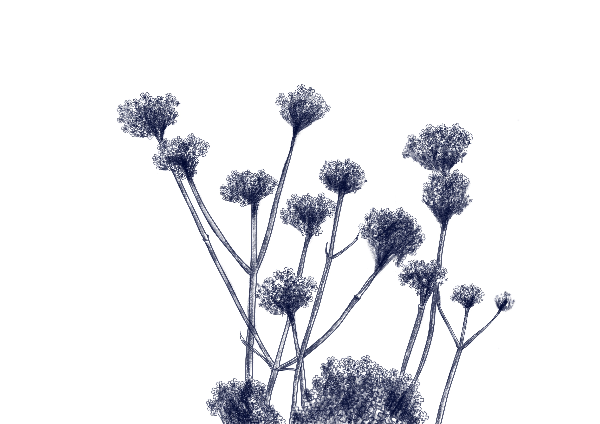

Verbena bonariensis
Verbena alta

La Verbena alta (Verbena bonariensis) es una especie de tipo flora perteneciente a la familia Verbenaceae.
Se distribuye en las zonas del sur de Brasil, Bolivia, Paraguay, Uruguay, Argentina y Chile, incluyendo áreas de Punta del Diablo donde es nativa. Su estado de conservación es estable y no está catalogada como amenazada, aunque en algunas regiones se considera naturalizada o incluso invasora fuera de su área original.
Su morfología se destaca por ser una planta herbácea perenne, con tallos erguidos que pueden alcanzar hasta 2 metros de altura, hojas opuestas y flores pequeñas agrupadas en inflorescencias de color púrpura o rosa, muy apreciadas en jardinería por su prolongada floración.
Su rol en el ecosistema es atraer polinizadores como mariposas, abejas y colibríes, además de cubrir suelos con vegetación que protege y mejora la calidad del suelo.